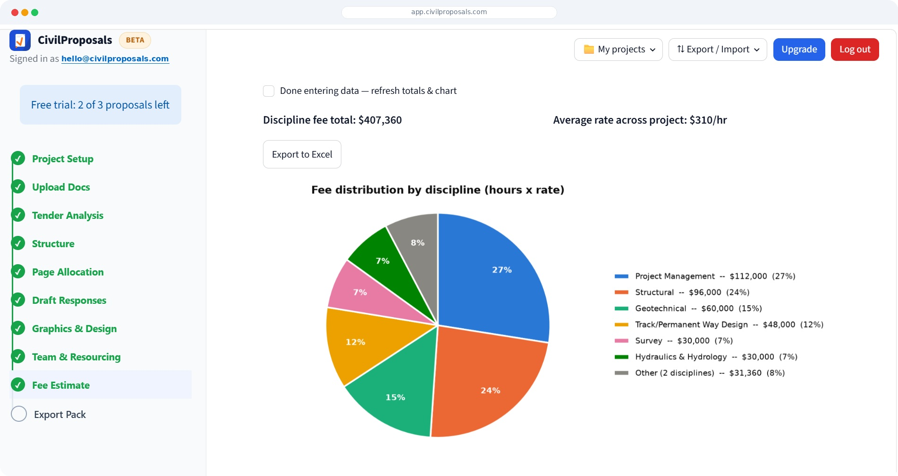
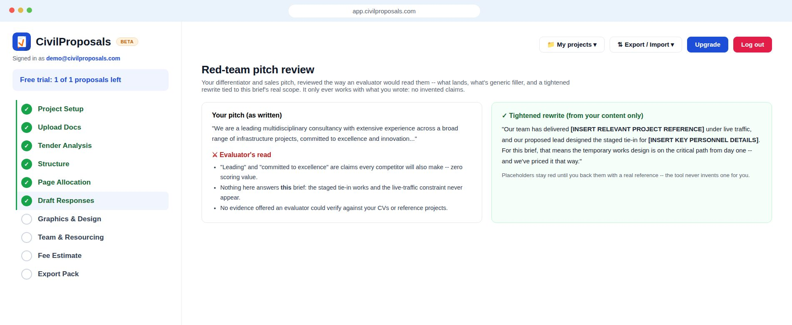
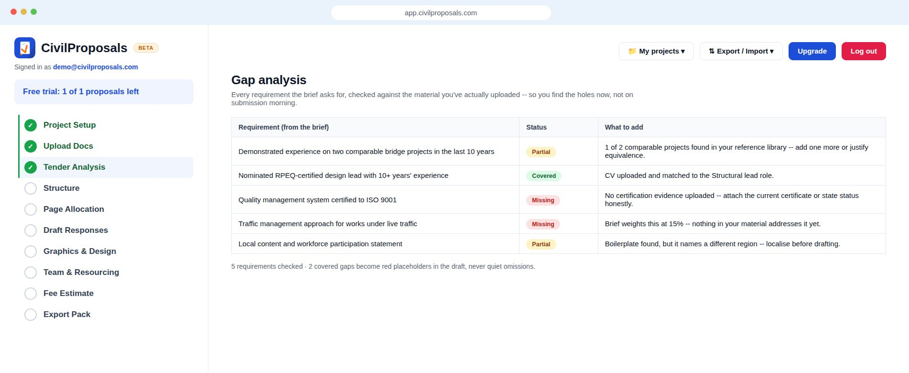
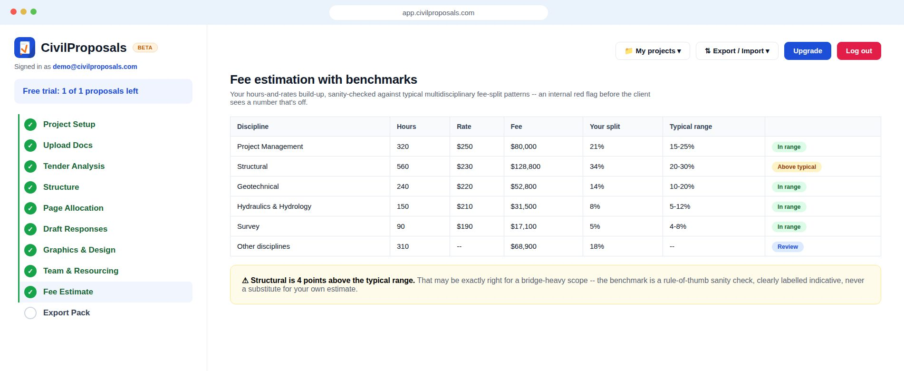
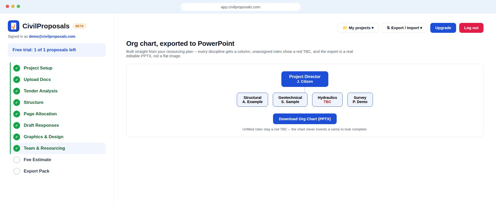
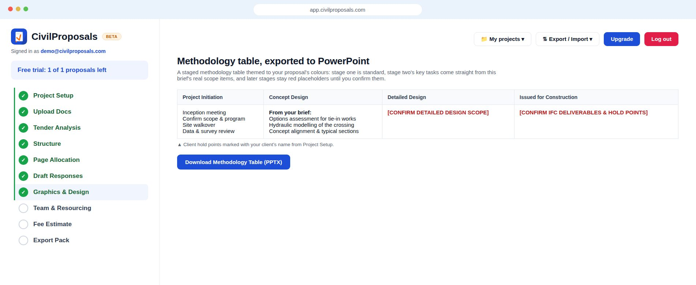

Upload the brief, and get an extracted compliance matrix, a weighted proposal structure, first pass drafts, and a designed Word document to hand to your proposal writers.

A real screenshot of the live app, mid-proposal: progress tracked step by step, with the discipline fee build-up and chart filling in as you go.
We know the challenges you face every day because we face them too. Whether it's a small project with a simple scope, a brief buried in an email, a client who isn't quite sure what they want, or a major tender that takes days to read and weeks to prepare, CivilProposals is designed to help. It's tender writing software and a fee proposal generator built specifically for civil engineering firms, not a generic AI wrapper. Built by civil engineers, for civil engineers, this bid writing AI assists you in creating professional, well structured proposals faster, allowing you to focus on understanding client needs and developing winning solutions.
Built for the people who own the pursuit: from bid managers running a full tender response to discipline leads putting together a short fee-proposal letter.
A short proposal can take up to eight hours to prepare. CivilProposals completes up to 50% of that work in under ten minutes.
By automating repetitive tasks such as formatting, document structuring, and content generation, the platform frees up valuable time so you can focus on what truly matters: developing a winning strategy, solving the engineering problem at hand, and increasing your chances of securing the contract.
The same three steps whether it's a full formal response or a short fee-proposal letter.
Not just a draft generator: the full first pass workflow.
Every mandatory requirement pulled straight from the brief and tracked against your response, so nothing gets missed between now and submission day.
Mirrors the brief's own named selection criteria when it has them, or a proven skeleton when it doesn't, weighted and page-allocated to match, not guessed at.
A real starting point for every section. Anything the tool doesn't actually know (a certification, a past project, a number) becomes a clearly marked placeholder.
Branded section dividers, cover banners, a real project org chart, and a themed layout, ready to hand to your proposal writers.
Archive finished proposals, tag them, and pull real content back in on your next pursuit instead of starting from a blank page every time.
An indicative discipline fee split, a delivery program, and a full commercial section buildup alongside the technical response.
Beyond the first-pass draft, the same project drives a set of deeper checks and exports. All demo data shown -- no real clients or projects.

Your differentiator and sales pitch, read the way an evaluator will read them: which claims score nothing because every competitor makes them too, what this brief actually rewards, and a tightened rewrite built strictly from your own content -- with red placeholders where evidence is still needed, never an invented project.

Every requirement in the brief, checked against the material you've actually uploaded and marked covered, partial, or missing -- so the holes surface while there's still time to fix them, not on submission morning.

Your hours-and-rates build-up, sanity-checked against typical multidisciplinary fee-split patterns. A discipline sitting outside its usual range gets flagged for a second look -- clearly labelled as an indicative rule-of-thumb, never a substitute for your own estimate.

A project org chart built straight from your resourcing plan and exported as a real, editable PPTX -- unassigned roles show a red TBC rather than an invented name, so the chart is honest about where the team still has gaps.

A staged methodology table themed to your proposal's colours: stage two's key tasks come straight from this brief's real scope items, later stages stay explicit red placeholders until you confirm them, and the whole thing exports as an editable PPTX to finish in PowerPoint.
Our mission is simple: to help you stop losing your most valuable resource, time. Too often, engineers spend hours on low value administrative work instead of applying their expertise where it has the greatest impact. CivilProposals takes care of the repetitive and time consuming aspects of proposal preparation, enabling you to focus on creating value for your clients, producing higher quality submissions, and winning more work.
Based on typical in-house preparation time at standard billing rates -- not a figure from a specific client.
Our estimate for formatting, structure, and first-pass drafting handled automatically -- actual time saved varies by tender.
A structured, formatted .docx, not a wall of AI chat text -- open it straight into your firm's own template.
A single bid can easily cost your firm $2,400 in staff time to prepare. CivilProposals does half that work for you, starting at a fraction of the price. All prices in Australian dollars (AUD).
1 free bid on sign up
Only pay when you use it
4 bids included, about $30 a bid
The things people usually ask before trying it.
No. General chat tools don't know how tender evaluation actually works: which parts of a brief are mandatory, how weightings map to page allocation, or what a compliance matrix needs to cover. CivilProposals is built specifically around that: it extracts scoring criteria straight from your brief, builds a weighted structure to match, and keeps a reusable library of your firm's own past proposals and CVs, so your next bid gets faster too, not just this one.
No. Every draft is grounded only in what you've actually uploaded or entered. Anything the tool doesn't genuinely know, a certification, a past project, a specific number, becomes a clearly marked placeholder for you to fill in, never a guess dressed up as fact.
Your tender briefs and company material are stored under your account only; other firms using CivilProposals can't see them. We use Claude (Anthropic) to power the AI drafting, and your data is never used to train their models. We're still a beta product and haven't completed formal compliance certifications like SOC 2 yet, so if that's a hard requirement for your firm, reach out before signing up and we'll be upfront about where things stand. The full picture -- where data is stored, encryption, AI processing, data residency -- is on our Security & Data Handling page.
You are, the same as you'd be with a first draft from a junior team member. CivilProposals produces a first pass, not a document that's ready to submit; your normal review process should still catch and correct anything before it goes to a client. Full detail in our Terms of Service.
No. Your first full bid is free, no card required. You'll only need to pay if you want to run a second one: $50 for a single bid, or $120/month for 4.
One $50 bid covers one project -- identified by its project name, tender name, client name, and the brief you upload, together -- and gives you 5 generation passes plus unlimited downloads of your current documents. A pass is used when you run Tender Analysis, or when you regenerate after changing an input; re-downloading the same, unchanged documents never uses a pass. Renaming a project, or swapping in a different brief, creates a new project identity for billing purposes, so your paid analysis stays attached to the original name and brief. Run out of passes on a project? A $50 top-up adds 5 more to that same project.
Yes, anytime, directly from your account, no phone call or email required. You'll keep access through the end of whatever billing period you've already paid for.
Your first full bid is free, no card required.
Practical writing on tendering, fee proposals and bid strategy.
First articles coming shortly — the blog lives here.
Occasional emails about new features and running better tenders. No spam, unsubscribe anytime.